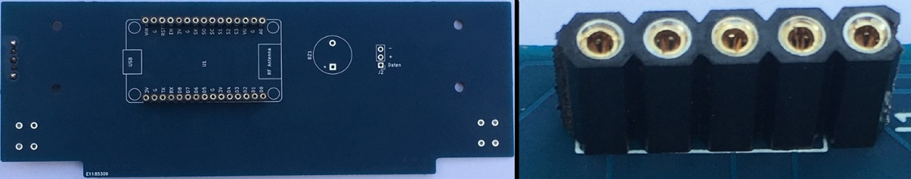
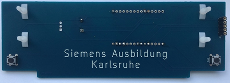
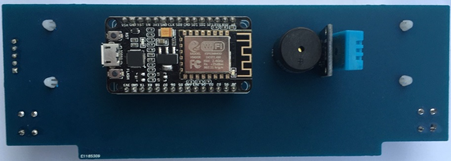
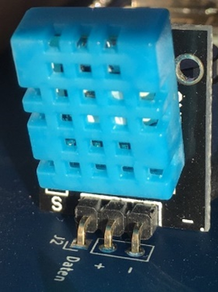
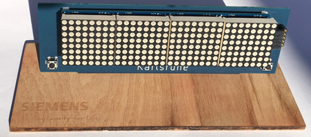

Dieser Teil der Anleitung ist hier auch in Videoform verfügbar
Aufbau
Insgesamt besteht das Gadget aus den folgenden acht Bauteilen:
- Platine
- Holzbrett
- Taster
- Lautsprecher
- Steckleiste
- ESP8266
- DHT11 (Sensor)
- Verbinder
- MQ135 (Luftqualitätssensor)
- LED-Matrix


Diese Bauteile müssen korrekt verdrahtet bzw. miteinander verbunden werden, damit die entsprechenden Funktionen gegeben sind. Diese Aufgabe übernimmt die Platine für uns. Auf ihr befinden sich Leiterbahnen, die die Verbindungen zwischen den Modulen und dem Mikrocontroller herstellen. In der folgenden Abbildung ist der Schaltplan eures Gadgets zu sehen. Es fällt auf, dass jedes Bauteil seinen eigenen Steckplatz hat. Die Größe der Bauteile sind auf der Platine angedeutet und müssen korrekt gesteckt, sowie verlötet werden. Hierbei ist es wichtig auf die Polarität der Bauteile zu achten, und auf eine angemessene Verlötung Wert zu legen, damit jede Verbindung korrekt verbunden ist.

Als erstes wollen wir die Steckverbinder verlöten. Diese müssen zu Beginn gekürzt werden, und anschließend verlötet werden. Dabei muss darauf geachtet werden, dass diese relativ gerade verlötet werden, damit die Bauteile, und insbesondere der ESP8266 hineingesteckt werden kann. In der folgenden Abbildung sind die Steckverbinder für den Microcontroller und der Led-Matrix zu sehen.

Als nächstes kann der Piezo-Lautsprecher verlötet werden, hierbei ist auf die Polarität zu achten. Nach dem Verlöten vom Piezo-Lautsprecher müssen seine langen Beine gekürzt werden. Anschließend sind die Taster dran, diese können hinein geklickt werden, und müssen ebenfalls verlötet werden. Somit fehlt noch der DHT11 Sensor, der ebenfalls verlötet werden muss, auch hier muss auf die Polarität geachtet werden (siehe Bild). Im Anschluss werden die Abstandshalter in die Platine gesteckt. In Summe sieht es anschließend wie folgt aus:   
Daraufhin folgt der vorletzte Arbeitsschritt, welcher darin besteht, die LED-Matrix auf die Abstandshalter zu stecken und eine Verbindung mit der Platine herzustellen. Tipp: Stelle eine sichere Verbindung der Steckleiste und der schrägen Steckleiste der LED-Matrix her (darf feste gedrückt oder auch zusätzlich verlötet werden). Der letzte Schritt besteht darin, den ESP8266 in die Steckleiste zu drücken und die Platine schräg mit einem tropfen Sekundenkleber in das Holzbrett zu stecken. Anschließend muss das Gadget Multi-MonG programmiert werden, damit es mit der Erklärung in Kapitel 4 gesteuert werden kann. 